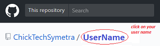

We'll be using two tools that are already loaded on your laptop: GitHub Desktop, and Komodo Edit.
First, we'll create an account with GitHub. (Unless you already have one.) Note: you will need an email address that you can access to confirm your account.) Git is a cloud repository for you code, that will also let you publish a simple website for free.
1Go to https://github.com/, and click the button to
Sign up for GitHub
2Create an account. Your username will be the name on your website, so consider what you would like...
3Choose 'Unlimited public repositories for free', and click Continue.

On the next page, you can fill in your experience, or just skip it and click Submit
4You'll need to go to your email address and verify the account. Just click the link
that GitHub sends you.
5Now that we have an account, we'll need to set it up. Go to https://GitHub.com, and sign in.
6You'll be asked to create a Repository, where your web pages will be stored. This step is very important! You can have lots of repositories, but you can only have one that will publish to your own website. That repository name needs to be your Username.github.io

7Done? OK, now we're going to switch to your machine, where we already have your commands set up. On your laptop, go to C:\WorkshopFiles. There is a file there called SetUpGit that we need to edit.

8On the fifth line in the file, there are two places where is says "UserName". Change this to your actual Username that you set up in Git Hub. Then save and close the file.
9Now run the file by double-clicking it. Did it work?
10Last step: Go back to GitHub and click on your username. It should refresh the page, and list the files we've added.
To do: Make the previous pic smaller, and add a pic with all the files they should see
Wow, that was a lot to set up. But now we can have some fun.